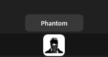
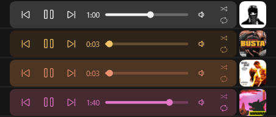
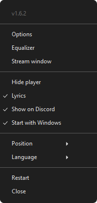
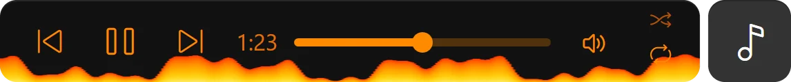

Every control, one click away
The cover sits between your taskbar icons. Click it and the player slides out next to it, with the volume of the app that is playing.
MMP puts the cover of whatever is playing on your Windows taskbar. Click it and a small player slides open with the controls, the time and, for Spotify, the lyrics. Its colours come from the cover, so it always matches the music.
This is a live copy of the player: play, skip and drag the seek bar. Every song repaints the page.
Previous, play / pause, next, a seek bar, the volume of the app that is playing, shuffle and repeat. Click the cover to open it, drag it along the taskbar to put it where you like.
The cover sits between your taskbar icons. Click it and the player slides out next to it, with the volume of the app that is playing.

Rest the mouse on the cover for a second.

Every song paints the player in its own colours. We call it Chameleon.
Turn on Lyrics in the tray menu and the open player shows the line being sung. Move the mouse over it to get the buttons back.

Options, lyrics, startup, side of the taskbar and 11 languages.
Open Options from the tray menu. Everything you change shows up on the taskbar at once and is saved on its own.

No account.
No ads.
No tracking.
MMP is free and open source under the MIT license. Here is everything it ever sends over the internet:
github.comChecks for a new version when it starts and once a day.lrclib.netOnly with Lyrics on: the title, artist, album and length of the Spotify song, to find its lyrics.anything elseNothing. Even the error log stays on your PC.Get MMP.zip from the latest release on GitHub.
Extract it and double-click MMP Launcher.bat. It also installs .NET 8 if it is missing.
Use the mey music player shortcut on your desktop. From then on it starts with Windows and updates itself.
Windows 10 (1809 or newer, 64-bit) and Windows 11.
The app is not signed with a paid certificate yet. Choose More info, then Run anyway. The code is all on GitHub.
Anything that shows up in the Windows media controls: Spotify, browsers playing YouTube, SoundCloud and most music and video players. Lyrics are for Spotify only.
MMP changes the app's volume in the Windows volume mixer, which sounds the same. In a browser all tabs share one volume, and Firefox's volume can't be changed from MMP.
For now MMP sits on the taskbar of the main screen, at the bottom or the top.
Turn off Start with Windows and choose Close in the tray menu, then delete the %LOCALAPPDATA%\MMP folder and the desktop shortcut.